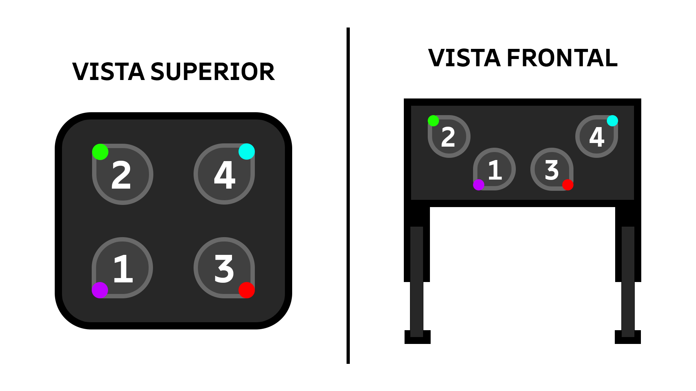

Sobre o Projetista
Sou Matheus Rodrigues, projetista deste fogão inovador.
Atualmente atuo como administrador de banco de dados e curso pós graduação no IFSP Capivari, onde desenvolvi
este projeto.
O projeto foi desenvolvido para a disciplina Desenvolvimento para Internet I, onde foram
abordados conceitosde acessibilidade e usabilidade na criação de interfaces.
Nova Interface do Fogão

O fogão conta com:
-
Bocas em formato assimétrico facilitando a associação entre bocas e controles.
-
Grandes botões táteis com leds RGB e numerais indicativos a
fim de facilitar o uso por pessoas com deficiências visuais e motoras.
-
Sistema de controle por voz, permitindo os usuários controlarem
acendimento e temperatura das bocas do fogão por meio de comandos de voz.
-
Feedbacks sonoros para alterações de estado,
garantindo feedbacks claros para todos os usuários.
-
Ajuste de altura, permitindo que o fogão seja
elevado ou rebaixado conforme a necessidade do usuário.
As cores dos botões foram escolhidas para serem facilmente distinguíveis, com opções de
personalização para daltonismo. Tais cores também indicam o nível de calor, proporcionando uma experiência
intuitiva.
Necessidades atendidas
Este fogão foi projetado para atender necessidades de pessoas em diversas condições, entre elas:
mobilidade reduzida, deficiências físicas, nanismo, deficiências visuais e auditivas, analfabetismo e até
mesmo
usuários infantis.
Os botões em formato personalizado, leds indicativos e o sistema de controle por voz auxiliam
a usabilidade para pessoas com deficiências visuais, analfabetos e crianças.
Além disso, os botões táteis e o ajuste de altura beneficiam usuários com mobilidade reduzida, cadeirantes,
e
pessoas de baixa estatura.
Conceitos de Acessibilidade e Usabilidade utilizados
-
Eficiência: o fogão foi projetado para acender com um click ou comando de voz, facilitando o uso.
-
Satisfação do Usuário: o design intuitivo e os feedbacks trazem uma boa experiência,
enquanto a estética moderna é atraente.
-
Flexibilidade: o ajuste de altura e das cores dos leds atendem a diferentes necessidades.
-
Memorabilidade: o design simples e os botões personalizados facilitam a memorização do uso.
-
Acessibilidade: o projeto foi pensado para garantir segurança e usabilidade para pessoas com
múltiplos níveis de deficiência.
-
Feedback: os feedbacks visuais e sonoros garantem que o usuário seja constantemente informado
sobre o
estado do fogão.
Manual de Utilização do Fogão Acessível
1. Acendendo uma Boca do Fogão
Para acender uma boca do fogão, siga os passos abaixo:
-
Identifique a boca que deseja acender pelo formato, numeral ou cor do led correspondente.
-
Pressione o botão correspondente à boca desejada. Você ouvirá um som de clique indicando que o botão foi
pressionado.
-
O led do botão acenderá na cor respectiva, indicando que a boca está acesa.
Alternativamente, você pode acender a boca do fogão usando comandos de voz. Para isso, siga os passos abaixo:
-
Diga o comando "Acender boca [número]" para a boca desejada ou "Acender boca [cor]" para a boca com a
cor
correspondente.
-
O led correspondente à boca acenderá e um som de clique será emitido, indicando que a boca está acesa.
2. Ajustando a Temperatura
Para ajustar a temperatura de uma boca do fogão, siga os passos abaixo:
-
Pressione por três segundos o botão da boca que deseja ajustar.
-
O led do botão começará a piscar, indicando que está no modo de ajuste de temperatura.
-
Pressione o botão repetidamente para alternar entre as temperaturas baixa, média e alta. O led mudará de
intensidade de acordo com a temperatura selecionada.
-
Solte o botão para confirmar a temperatura selecionada. Um som de confirmação será emitido.
Alternativamente, você pode ajustar a temperatura usando comandos de voz. Para isso, siga os passos abaixo:
-
Diga o comando "Ajustar boca [número] para [baixa/média/alta]" ou "Ajustar boca [cor] para
[baixa/média/alta]".
-
O led correspondente à boca mudará de intensidade de acordo com a temperatura selecionada e um som de
confirmação será emitido.
3. Desligando uma Boca do Fogão
Para desligar uma boca do fogão, siga os passos abaixo:
-
Identifique a boca que deseja desligar pelo formato, numeral ou cor do led correspondente.
-
Pressione o botão correspondente à boca desejada. Você ouvirá um som de clique indicando que o botão foi
pressionado.
-
O led do botão ficará em luz fraca, indicando que a boca está desligada.
Alternativamente, você pode desligar a boca do fogão usando comandos de voz. Para isso, siga os passos
abaixo:
-
Diga o comando "Desligar boca [número]" para a boca desejada ou "Desligar boca [cor]" para a boca com a
cor
correspondente.
-
O led correspondente à boca ficará em luz fraca e um som de clique será emitido, indicando que a boca
está
desligada.